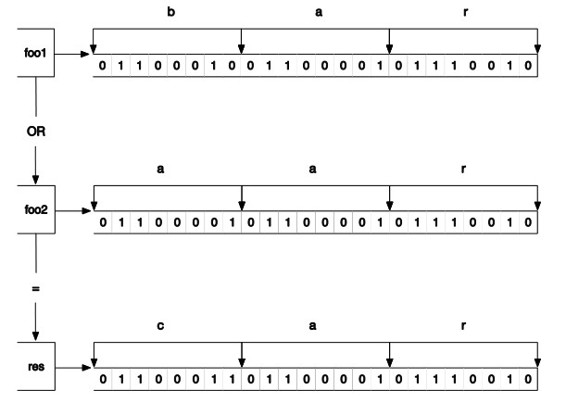

3.2 字符串类型
作为一个爱造轮子的资深极客，小白每次看到自己博客最下面的“Powered by WordPress”[1] 都觉得有些不舒服，终于有一天他下定决心要开发一个属于自己的博客。但是用腻了MySQL数据库的小白总想尝试一下新技术，恰好上次参加Node Party时听人介绍过 Redis 数据库，便想着趁机试一试。可小白只知道 Redis 是一个键值对数据库，其他的一概不知。抱着试一试的态度，小白找到了自己大学时教计算机的宋老师，一问之下欣喜地发现宋老师竟然对Redis颇有研究。宋老师有感于小白的好学，决定给小白开个小灶。
小白：
宋老师您好，我最近听别人介绍过 Redis，当时就对它很感兴趣。恰好最近想开发一个博客，准备尝试一下它。有什么能快速学会Redis的方法吗？
宋老师笑着说：
心急吃不了热豆腐，要学会 Redis就要先掌握 Redis的键值数据类型和相关的命令，这些内容是 Redis的基础。为了让你更全面地了解 Redis的每种数据类型，接下来我会先讲解如何将Redis作为数据库使用，但是实际上 Redis可不只是数据库这么简单，更多的公司和团队将 Redis用作缓存和队列系统，而这部分内容等你掌握了Redis的基础后我会再进行介绍。作为开始，我先来讲讲Redis中最基本的数据类型——字符串类型。
字符串类型是 Redis 中最基本的数据类型，它能存储任何形式的字符串，包括二进制数据。你可以用其存储用户的邮箱、JSON 化的对象甚至是一张图片。一个字符串类型键允许存储的数据的最大容量是512 MB[2] 。
字符串类型是其他4种数据类型的基础，其他数据类型和字符串类型的差别从某种角度来说只是组织字符串的形式不同。例如，列表类型是以列表的形式组织字符串，而集合类型是以集合的形式组织字符串。学习过本章后面几节后相信读者对此会有更深的理解。
1．赋值与取值
SET key value
GET key
SET和GET是Redis中最简单的两个命令，它们实现的功能和编程语言中的读写变量相似，如 key = "hello"在Redis中是这样表示的：
redis> SET key hello
OK
想要读取键值则更简单：
redis> GET key
"hello"
当键不存在时会返回空结果。
为了节约篇幅，同时避免读者过早地被编程语言的细节困扰，本书大部分章节将只使用redis-cli进行命令演示（必要的时候会配合伪代码），第5章会专门介绍在各种编程语言（PHP、Python、Ruby和Node.js）中使用Redis的方法。
不过，为了能让读者提前对 Redis 命令在实际开发时的用法有一个直观的体会，这里会先使用 PHP 实现一个 SET/GET命令的示例网页：用户访问示例网页时程序会通过 GET命令判断Redis中是否存储了用户的姓名，如果有则直接将姓名显示出来（如图3-1所示），如果没有则会提示用户填写（如图 3-2 所示），用户单击“提交”按钮后程序会使用 SET命令将用户的姓名存入到Redis中。
图3-1 设置过姓名时的页面
图3-2 没有设置过姓名时的页面
代码如下：
<?php
//加载 Predis 库的自动加载函数
require './predis/autoload.php';
//连接 Redis
$redis= new Predis\Client(array(
'host' => '127.0.0.1',
'port' => 6379
));
//如果提交了姓名则使用 SET 命令将姓名写入到 Redis 中
if ($_GET['name']) {
$redis->set('name', $_GET['name']);
}
//通过 GET 命令从 Redis 中读取姓名
$name = $redis->get('name');
?><!DOCTYPE html>
<html>
<head>
<meta charset="utf-8" />
<title>我的第一个Redis程序</title>
</head>
<body>
<?php if ($name): ?>
<p>您的姓名是：<?php echo $name; ?></p>
<?php else: ?>
<p>您还没有设置姓名。</p>
<?php endif; ?>
<hr />
<h1>更改姓名</h1>
<form>
<p>
<label for="name">您的姓名：</label>
<input type="text" name="name" id="name" />
</p>
<p>
<button type="submit">提交</button>
</p>
</form>
</body>
</html>
在这个例子中我们使用PHP的Redis客户端库Predis与Redis通信。5.1节会专门介绍Predis，有兴趣的读者可以先跳到5.1节查看Predis的安装方法来实际运行这个例子。
Redis的其他命令也可以使用Predis通过同样的方式调用，如马上要介绍的INCR命令的调用方法是$redis->incr(键名)。
2．递增数字
INCR key
前面说过字符串类型可以存储任何形式的字符串，当存储的字符串是整数形式时， Redis 提供了一个实用的命令 INCR，其作用是让当前键值递增，并返回递增后的值，用法为：
redis> INCR num
(integer) 1
redis> INCR num
(integer) 2
当要操作的键不存在时会默认键值为0，所以第一次递增后的结果是1。当键值不是整数时Redis会提示错误：
redis> SET foo lorem
OK
redis> INCR foo
(error) ERR value is not an integer or out of range
有些读者会想到可以借助GET和SET两个命令自己实现incr函数，伪代码如下：
def incr($key)
$value = GET $key
if not $value
$value = 0
$value = $value + 1
SET $key, $value
return $value
如果 Redis 同时只连接了一个客户端，那么上面的代码没有任何问题（其实还没有加入错误处理，不过这并不是此处讨论的重点）。可当同一时间有多个客户端连接到Redis时则有可能出现竞态条件（race condition）[3] 。例如有两个客户端A 和B 都要执行我们自己实现的 incr 函数并准备将同一个键的键值递增，当它们恰好同时执行到代码第二行时二者读取到的键值是一样的，如“5”，而后它们各自将该值递增到“6”并使用 SET 命令将其赋给原键，结果虽然对键执行了两次递增操作，最终的键值却是“6”而不是预想中的“7”。包括 INCR在内的所有Redis命令都是原子操作（atomic operation）[4] ，无论多少个客户端同时连接，都不会出现上述情况。之后我们还会介绍利用事务（4.1节）和脚本（第6章）实现自定义的原子操作的方法。
1．文章访问量统计
博客的一个常见的功能是统计文章的访问量，我们可以为每篇文章使用一个名为post:文章ID:page.view的键来记录文章的访问量，每次访问文章的时候使用INCR命令使相应的键值递增。
提示 Redis 对于键的命名并没有强制的要求，但比较好的实践是用“对象类型:对象ID:对象属性”来命名一个键，如使用键user:1:friends来存储ID为1的用户的好友列表。对于多个单词则推荐使用“.”分隔，一方面是沿用以前的习惯（Redis以前版本的键名不能包含空格等特殊字符），另一方面是在 redis-cli 中容易输入，无需使用双引号包裹。另外为了日后维护方便，键的命名一定要有意义，如 u:1:f的可读性显然不如user:1:friends好（虽然采用较短的名称可以节省存储空间，但由于键值的长度往往远远大于键名的长度，所以这部分的节省大部分情况下并不如可读性来得重要）。
2．生成自增ID
那么怎么为每篇文章生成一个唯一 ID 呢？在关系数据库中我们通过设置字段属性为AUTO_INCREMENT来实现每增加一条记录自动为其生成一个唯一的递增 ID 的目的，而在Redis中可以通过另一种模式来实现：对于每一类对象使用名为对象类型(复数形式):count[5] 的键（如users:count）来存储当前类型对象的数量，每增加一个新对象时都使用INCR命令递增该键的值。由于使用INCR命令建立的键的初始键值是1，所以可以很容易得知， INCR命令的返回值既是加入该对象后的当前类型的对象总数，又是该新增对象的ID。
3．存储文章数据
由于每个字符串类型键只能存储一个字符串，而一篇博客文章是由标题、正文、作者与发布时间等多个元素构成的。为了存储这些元素，我们需要使用序列化函数（如PHP中的 serialize和JavaScript中的 JSON.stringify）将它们转换成一个字符串。除此之外因为字符串类型键可以存储二进制数据，所以也可以使用MessagePack[6] 进行序列化，速度更快，占用空间也更小。
至此我们已经可以写出发布新文章时与Redis操作相关的伪代码了：
# 首先获得新文章的 ID
$postID = INCR posts:count
# 将博客文章的诸多元素序列化成字符串
$serializedPost = serialize($title, $content, $author, $time)
# 把序列化后的字符串存一个入字符串类型的键中
SET post:$postID:data, $serializedPost
获取文章数据的伪代码如下（以访问ID为42的文章为例）：
# 从 Redis 中读取文章数据
$serializedPost = GET post:42:data
# 将文章数据反序列化成文章的各个元素
$title, $content, $author, $time = unserialize($serializedPost)
# 获取并递增文章的访问数量
$count = INCR post:42:page.view
除了使用序列化函数将文章的多个元素存入一个字符串类型键中外，还可以对每个元素使用一个字符串类型键来存储，这种方法会在3.3.3节讨论。
1．增加指定的整数
INCRBY key increment
INCRBY命令与INCR命令基本一样，只不过前者可以通过increment参数指定一次增加的数值，如：
redis> INCRBY bar 2
(integer) 2
redis> INCRBY bar 3
(integer) 5
2．减少指定的整数
DECR key
DECRBY key decrement
DECR命令与INCR命令用法相同，只不过是让键值递减，例如：
redis> DECR bar
(integer) 4
而 DECRBY 命令的作用不用介绍想必读者就可以猜到，DECRBY key 5 相当于 INCRBY key –5。
3．增加指定浮点数
INCRBYFLOAT key increment
INCRBYFLOAT命令类似INCRBY命令，差别是前者可以递增一个双精度浮点数，如：
redis> INCRBYFLOAT bar 2.7
"6.7"
redis> INCRBYFLOAT bar 5E+4
"50006.69999999999999929"
4．向尾部追加值
APPEND key value
APPEND作用是向键值的末尾追加value。如果键不存在则将该键的值设置为value，即相当于 SET key value。返回值是追加后字符串的总长度。如：
redis> SET key hello
OK
redis> APPEND key " world!"
(integer) 12
此时 key 的值是"hello world!"。APPEND 命令的第二个参数加了双引号，原因是该参数包含空格，在redis-cli中输入需要双引号以示区分。
5．获取字符串长度
STRLEN key
STRLEN命令返回键值的长度，如果键不存在则返回0。例如：
redis> STRLEN key
(integer) 12
redis> SET key 你好
OK
redis> STRLEN key
(integer) 6
前面提到了字符串类型可以存储二进制数据，所以它可以存储任何编码的字符串。例子中Redis接收到的是使用UTF-8编码的中文，由于“你”和“好”两个字的UTF-8编码的长度都是3，所以此例中会返回6。
6．同时获得/设置多个键值
MGET key [key …]
MSET key value [key value …]
MGET/MSET 与GET/SET 相似，不过MGET/MSET 可以同时获得/设置多个键的键值。例如：
redis> MSET key1 v1 key2 v2 key3 v3
OK
redis> GET key2
"v2"
redis> MGET key1 key3
1) "v1"
2) "v3"
7．位操作
GETBIT key offset
SETBIT key offset value
BITCOUNT key [start] [end]
BITOP operation destkey key [key …]
一个字节由8个二进制位组成，Redis提供了4个命令可以直接对二进制位进行操作。为了演示，我们首先将foo键赋值为bar：
redis> SET foo bar
OK
bar的3个字母“b”“a”和“r”对应的ASCII码分别为98、97和114，转换成二进制后分别为1100010、1100001和1110010，所以foo键中的二进制位结构如图3-3所示。
图3-3 bar 的二进制存储结构
GETBIT命令可以获得一个字符串类型键指定位置的二进制位的值（0或1），索引从0开始：
redis> GETBIT foo 0
(integer) 0
redis> GETBIT foo 6
(integer) 1
如果需要获取的二进制位的索引超出了键值的二进制位的实际长度则默认位值是0：
redis> GETBIT foo 100000
(integer) 0
SETBIT 命令可以设置字符串类型键指定位置的二进制位的值，返回值是该位置的旧值。如我们要将foo键值设置为aar，可以通过位操作将foo键的二进制位的索引第6位设为0，第7位设为1：
redis> SETBIT foo 6 0
(integer) 1
redis> SETBIT foo 7 1
(integer) 0
redis> GET foo
"aar"
如果要设置的位置超过了键值的二进制位的长度，SETBIT命令会自动将中间的二进制位设置为0，同理设置一个不存在的键的指定二进制位的值会自动将其前面的位赋值为0：
redis> SETBIT nofoo 10 1
(integer) 0
redis> GETBIT nofoo 5
(integer) 0
BITCOUNT命令可以获得字符串类型键中值是1的二进制位个数，例如：
redis> BITCOUNT foo
(integer) 10
可以通过参数来限制统计的字节范围，如我们只希望统计前两个字节（即"aa"）：
redis> BITCOUNT foo 0 1
(integer) 6
BITOP命令可以对多个字符串类型键进行位运算，并将结果存储在destkey参数指定的键中。BITOP命令支持的运算操作有AND、OR、XOR和NOT。如我们可以对bar和aar进行OR运算：
redis> SET foo1 bar
OK
redis> SET foo2 aar
OK
redis> BITOP OR res foo1 foo2
(integer) 3
redis> GET res
"car"
运算过程如图3-4所示。

图3-4 OR 运算过程示意
Redis 2.8.7引入了 BITPOS命令，可以获得指定键的第一个位值是0或者1的位置。还是以“bar”这个键值为例，如果想获取键值中的第一个二进制位为1的偏移量，则可以执行：
redis> SET foo bar
OK
redis> BITPOS foo 1
(integer) 1
结合图3-3可以看出，正如BITPOS命令的结果所示，“bar”中的第一个值为1的二进制位的偏移量为1（同其他命令一样，BITPOS命令的索引也是从0开始算起）。那么有没有可能指定二进制位的查询范围呢？BITPOS 命令的第二个和第三个参数分别可以用来指定要查询的起始字节（同样从0开始算起）和结束字节。注意这里的单位不再是二进制位，而是字节。如果我们想查询第二个字节到第三个字节之间（即“a”和“r”）出现的第一个值为1的二进制位的偏移量，则可以执行：
redis> BITPOS foo 1 1 2
(integer) 9
这里的返回结果的偏移量是从头开始算起的，与起始字节无关。另外要特别说明的一个有趣的现象是如果不设置结束字节且键值的所有二进制位都是1，则当要查询值为0的二进制位偏移量时，返回结果会是键值长度的下一个字位的偏移量。这是因为 Redis 会认为键值长度之后的二进制位都是0。
利用位操作命令可以非常紧凑地存储布尔值。比如如果网站的每个用户都有一个递增的整数ID，如果使用一个字符串类型键配合位操作来记录每个用户的性别（用户ID作为索引，二进制位值1和0表示男性和女性），那么记录100万个用户的性别只需占用100 KB多的空间，而且由于GETBIT和SETBIT的时间复杂度都是O(1)，所以读取二进制位值性能很高。
注意 使用 SETBIT 命令时，如果当前键的键值长度小于要设置的二进制位的偏移量时，Redis会自动分配内存并将键值的当前长度到指定的偏移量之间的二进制位都设置为 0。如果要分配的内存过大，则很可能会造成服务器的暂时阻塞而无法接收同一时间的其他请求。举例而言，在一台2014年的MacBook Pro 笔记本上，设置偏移量232-1的值（即分配 500 MB 的内存）需要耗费将近 1 秒的时间。分配过大的偏移量除了会造成服务器阻塞，还会造成空间浪费。还是举刚才存储网站用户性别的例子，如果这个网站的用户ID是从100000001开始的，那么会造成10多MB的浪费，正确的做法是给每个用户的ID减去100000000再进行存储。